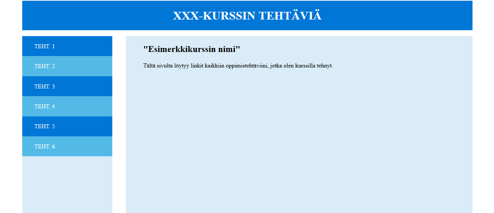

Oppimistehtävä 3 / TIE361
Oppimistilanteen kuvaus
Tehtävä on suunnattu yläkouluikäisille tai lukiolaisille. Tehtävä soveltuu kaikkiin oppiaineisiin, mutta sisällöltään tämä liittyy suurimmaksi osin tietotekniikkaan. Tarkoitus on, että oppilaat tuottavat www-sivun, jota voi käyttää kotisivuna minkä tahansa kurssin oppimistehtäville. Tehtävässä kuluva aika riippuu paljon oppilaiden ennakkotiedoista. Ohjeiden avulla luulisin, että menee 2-6 tuntia.
Tavoitteet
Tavoitteena on oppia html:n ja css:n kirjoittamista. Tehtävä keskittyy enemmän css:ään ja html-koodi tulee enemmän annettuna. css:ään liittyen harjoitellaan etenkin float, margin, padding, background ja color komentoja. www-sivun varsinainen julkaiseminen jätetään toiseen tehtävään.
Oppilailla olisi hyvä olla vähän kokemusta www-sivujen tekemisestä, mutta tehtävä onnistuu varmasti ainakin opettajan avulla ensikertalaiseltakin.
OPS:in kannalta tavoitteet liittyvät tieto- ja viestintäteknologiseen osaamiseen (L5).
Erityisesti tehtävä liittyy kohtaan käytännön taidot ja oma tuottaminen
. Lisäksi
tehtävä liittyy myös kohtaan Tiedonhallinta sekä tutkiva ja luova työskentely
,
sillä oppilaita ohjataan myös itse etsimään tietoa www-sivujen tuottamiseen liittyen.
Tehtävänanto
Tuota www-sivu, jota voit käyttää minkä tahansa kurssin oppimistehtäviesi kotisivuna. Sivun pitää olla asemoinniltaan mallisivun mukainen:
Eli ylhäällä pitää olla header-osio ja linkit pitää olla erillisessä navigointipalkissa vasemmalla. Lisäksi navigointipalkin viereen tehdään sisältö osio.
Tarkemmat ohjeet
Aloita luomalla uusi kansio omalla nimellasi ("etunimi_sukunimi"). Avaa sitten tekstieditori (esim. notepad++) ja kopioi seuraava koodi pohjaksi html-tiedostollesi:
<!DOCTYPE html>
<html>
<head>
<meta charset="UTF-8">
<title>example</title>
</head>
<body>
</body>
</html>
Tallenna tiedosto kansioosi nimellä "index.html".
Lisää sopiva title ja lisää body-osioon ensimmäiseksi header-elementti. Tee headeriin
otsikko, joka voisi olla esim. kurssin nimi. Seuraavaksi lisää body-osioon div-elementti, joka
tulee pitämään sisällään navigointipalkin ja sisällön.
Seuraavaksi lisää tekemääsi div:iin nav-elementti ja sen sisään järjestämätön lista (ul). Tee listaan muutama tehtävälinkki mallin vuoksi. Seuraavaksi lisää section-elementti, jonka sisään tulemme sijoittamaan sivun sisällön. Nyt body-elementin sisältö pitäisi näyttää suunnilleen tältä:
<header>
<h1>XXX-KURSSIN TEHTÄVIÄ</h1>
</header>
<div class="">
<nav class="">
<ul>
<li><a href="#" class="">TEHT. 1</a></li>
<li><a href="#" class="">TEHT. 2</a></li>
<li><a href="#" class="">TEHT. 3</a></li>
<li><a href="#" class="">TEHT. 4</a></li>
<li><a href="#" class="">TEHT. 5</a></li>
<li><a href="#" class="">TEHT. 6</a></li>
</ul>
</nav>
<section class="">
<h2>"Esimerkkikurssin nimi"</h2>
<p>Tältä sivulta löytyy linkit kaikkiin oppimistehtäviini, jotka olen
kurssilla tehnyt.</p>
</section>
</div>
Kokeile nyt miltä sivu näyttää selaimessa klikkaamalla index.html tiedostoasi. Seuraavaksi
tavoitteena on muotoilla sivun ulkonäköä css-tiedoston avulla.
CSS-tiedosto
Kyseessä on siis tyylitiedosto, jolla voidaan esim. asemoida elementit halutulla tavalla ja määrittää väriominaisuuksia. Luo uusi tiedosto kansioosi haluamallasi nimellä, kunhan tiedoston pääte on .css (esim. "ulkoasu.css"). Voimme määrittää tietyille elementeille ulkoasun seuraavalla syntaksilla:
h1{
font-size:14px;
color:red;
}
Tällainen merkintä asettaisi kaikille h1-tason otsikoille fonttikooksi 14 pikseliä ja väriksi
punaisen.
Elementtejä voidaan valita myös elementille annettavan luokan perusteella. Mallikoodissa onkin tietyille elementeille jo luokkamääritys kirjoitettu, ainoastaan luokkien nimet täytyy lisätä itse. Jos oletetaan, että annetaan navigointiluokan nimeksi "navbar", voidaan sen ulkoasua muokata kirjoittamalla css-tiedostoon:
.navbar{
background-color:#DAECF7;
}
Eli luokkien nimien eteen pitää css-tiedostossa laittaa piste. Elementtejä voidaan valita
myös id-ominaisuuden perusteella, mutta jätetään se toistaiseksi käsittelemättä.
Valinta voidaan tehdä css-tiedostossa myös siten, että kohdistetaan valinta esim. kaikkiin "navbar"-luokan sisällä oleviin linkkeihin <a>:
.navbar a{
color:white;
}
Ulkoasun muotoilu
Jos sivun reunoihin halutaan hiukan tilaa, voit asettaa <body>-elementin leveydeksi (width)haluamasi prosenttimäärän (alle 100) ja kirjoittaa marginaaliksi "auto".
body{
width:90%;
margin:auto;
}
Tällöin kaiken bodyn sisällä olevan leveys on 90 % selaimen leveydestä ja marginaalit
asettuvat automaattisesti yhtä suuriksi.
Muotoillaan sitten <header>. Aseta leveydeksi 100% (tämä on siis 100 % bodyn leveydestä, koska header on bodyn sisällä). Aseta sille myös haluamasi taustaväri, jonka voit antaa esim. heksa-koodina (löydät värikoodit esim. täältä). Aseta sille myös korkeus käyttäen height-ominaisuutta. Voit käyttää esim. yksikköä "em", joka on suhteessa elementissä vallitsevaan fontin kokoon. Saat tekstin pystysuunnassa keskelle, kun asetat elementin rivikorkeuden yhtäsuureksi kuin sen korkeuden:
header{
height:6em;
line-height:6em;
}
Voit myös muuttaa taustaväriä ja tekstin väriä. Etsi netistä, mitä saisit aikaan
text-align-ominaisuutta muuttamalla.
Tehdään seuraavaksi navigointipalkki. Valitse ensin <div>-elementti, jonka sisällä navigointi ja sisältö ovat ja aseta sen leveydeksi 100%. Sitten valitse <nav>-elementti ja anna sille haluamasi leveys. Se saadaan vasempaan laitaan, kun kirjoitetaan sille float-ominaisuudeksi "left". Nyt palkki ja sen sisällä olevat linkit pitäisi olla vasemmalla. Voit muotoilla linkkejä ja navigointipalkkia haluamallasi tavalla (esim. taustaväri ja väri).
Saat listaelementeistä sivumerkit pois kun kirjoitat listalle:
ul{
list-style-type:none;
}
Linkkejä voit muokata soveltamalla tähän asti opittua. Linkeistä saat tehtyä laatikkomaisia
elementtejä asettamalla "display:block;". Muotoilussa ylipäätänsä on hyvä muistaa,
että margin-ominaisuus muuttaa tilaa elementin reunojen ulkopuolella ja
padding-ominaisuus muuttaa tilaa elementin reunojen sisäpuolella.
Muotoillaan vielä <section>-elementti, josta löytyy sisältö. Tämä saadaan navigointipalkin viereen, kun annetaan sillekin float-ominaisuudeksi "left" ja annetaan sille leveys, joka on 100%-(navigointipalkin leveys). Jos haluat, että sen ja navigointipalkin väliin jää vähän tilaa, anna margin-left -ominaisuudeksi haluamasi prosenttimäärä ja huomioi se kokonaisleveydessä.
Käytä myös itse aktiivisesti internettiä ongelmatilanteissa. Kaikkiin ongelmiin löytyy kyllä ratkaisu, kun hetken etsii.
Mallivastaus